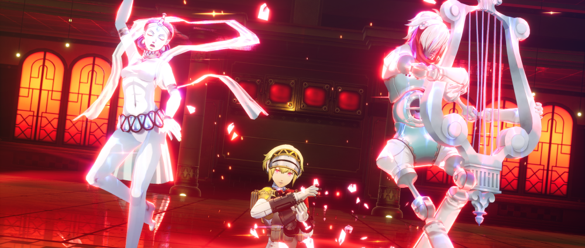
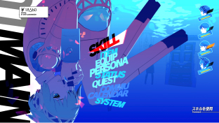
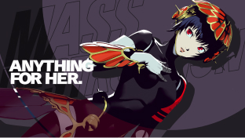
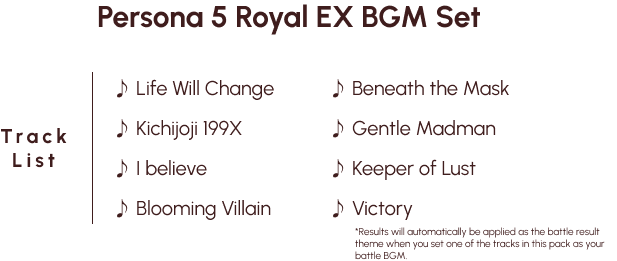
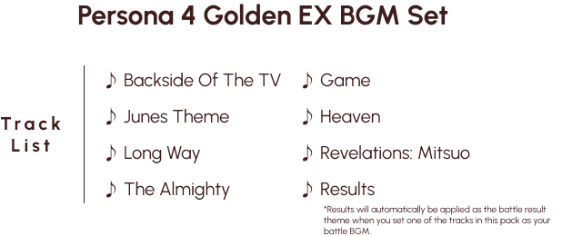
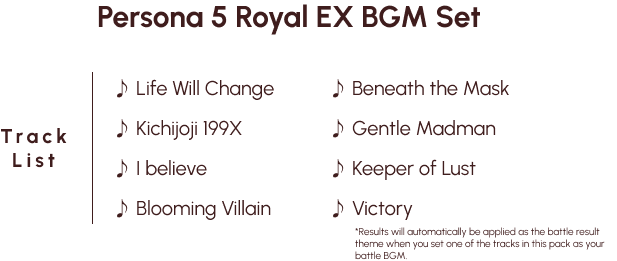
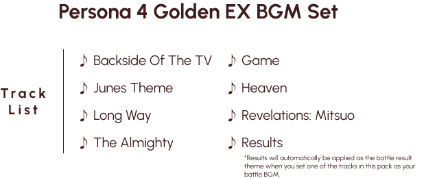
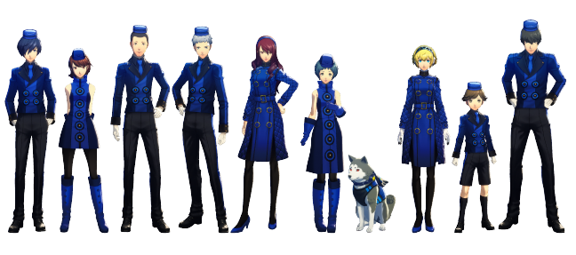
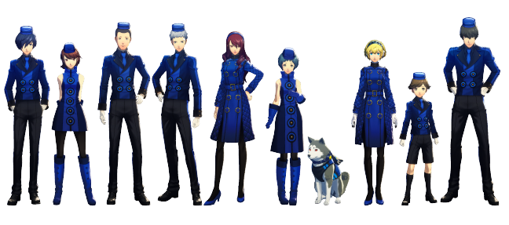

PLAY TRAILER
Additional story scenario and dungeon
Episode Aigis -The Answer-
Aigis, an android created to be an Anti-Shadow Suppression Weapon. This epilogue to Persona 3 Reload is told from her point of view.
Introduction
After unravelling the mysteries of the Dark Hour, fighting epic battles through Tartarus, and all the unforgettable events of Persona 3 Reload, the S.E.E.S. members find themselves trapped in a never-ending March 31st.
When an unfamiliar android, Metis, suddenly appears at the dorm along with the mysterious "Abyss of Time", the team works together to uncover the cause of this strange fate..
features
This extended story content is the remake of the original epilogue "The Answer", now featuring the quality of life features and graphical enhancements seen in Persona 3 Reload.
In addition these features, Episode Aigis -The Answer- features unique changes including new Theurgies and field actions for Aigis.
game featuresCharacters
AIGIS
Episode Aigis
Aigis
VA: Maaya Sakamoto
An anti-Shadow weapon equipped with a heart that can harness Persona abilities. Aigis develops human emotions after fighting alongside SEES and living with them. In Episode Aigis, she gains the power of the wild card—the ability to wield multiple Personas—as she and Metis face a new threat in the Abyss of Time. Her original Persona, Athena, morphs into Orpheus.
METIS
Episode Aigis
Metis
VA: Chiwa Saito
A mechanical girl who claims to be Aigis's younger sister. When the members of SEES find themselves trapped in a time loop, Metis appears and guides them to the Abyss of Time beneath Iwatodai Dorm. Her Persona, Psyche, specializes in Wind and Ice attacks as well as dealing physical damage.
expansion pass
By purchasing the Expansion pass, you can enjoy Episode Aigis -The Answer- and additional BGM and costume sets!
 



 


BUY NOW!
click here to purchasego to western website